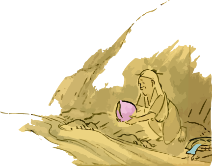
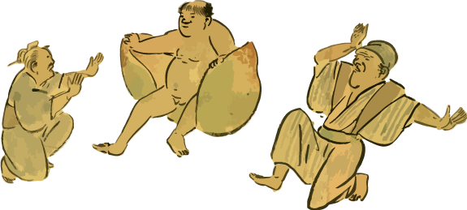

| 桃太郎 | おじいさんとおばあさん | イヌ、サル、キジ | 鬼 |
|---|---|---|---|
| 桃から生まれた男の子。主人公。 | 桃太郎の親。 | 桃太郎と一緒に鬼退治に行く仲間 | 鬼ヶ島に住んでいる。人々から宝物を奪う悪者 |
むかし、むかし、あるところに、おじいさんとおばあさんがおりました。おじいさんは山へしば刈りに
おばあさんは川へ洗濯に行きました。おばあさんが川のそばで、せっせと洗濯をしていますと、川上から大きな桃が「どんぶらこ、どんぶらこ」流れてきました。「おやおやこれは見事な桃だこと。 おじいさんへのお土産にうちへ持って帰りましょう。」おばあさんはそう言うと、桃を拾って家に帰りました。
夕方になっておじいさんが帰ってきました。「おばあさん、今帰ったよ。」「おや、おじいさん、おかえりなさい。今日はいいものがありますよ。」そういうとおばあさんはさっきの桃を取り出しました。 それを見ておじいさんは「おぉ、なんと立派な桃だ。早く食べよう。」と言いました。おばあさんは大きな包丁を取り出して桃を割ると
「おぎゃあ、おぎゃあ」と中からかわいらしい赤ちゃんが元気よく飛び出しました。